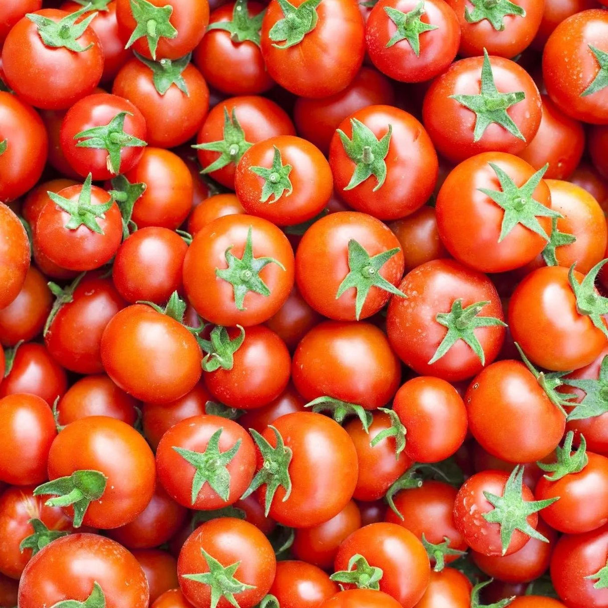
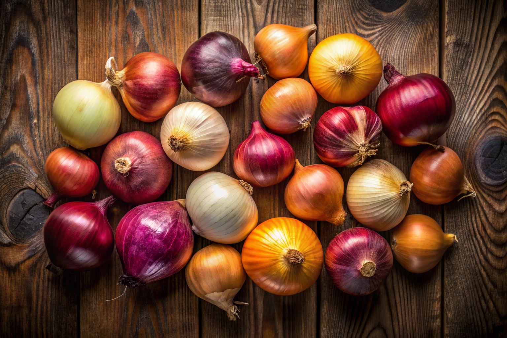

Tomatoes
Fresh, juicy tomatoes grown with precision farming techniques for optimal flavor and nutrition.
Yield: 45 tons/hectare
Season: Spring-Summer
Water: Moderate

Wheat
Premium quality wheat cultivated using smart irrigation and soil monitoring for maximum grain quality.
Yield: 6 tons/hectare
Season: Winter-Spring
Water: Low-Moderate

Maize
High-yield maize grown with advanced crop monitoring and optimized nutrient management systems.
Yield: 10 tons/hectare
Season: Summer-Fall
Water: Moderate-High

Potatoes
Nutrient-rich potatoes cultivated with precision agriculture for consistent size and quality.
Yield: 35 tons/hectare
Season: Spring-Fall
Water: Moderate

Onions
Fresh, flavorful onions grown with smart farming techniques ensuring optimal bulb development.
Yield: 40 tons/hectare
Season: Year-round
Water: Low-Moderate

Green Pepper
Crisp, vibrant green peppers grown in controlled environments with automated climate management.
Yield: 30 tons/hectare
Season: Spring-Summer
Water: Moderate